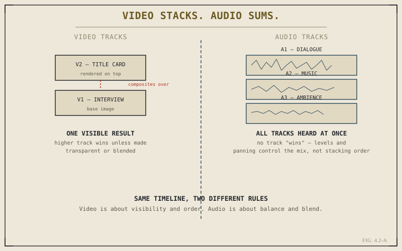

Video tracks and audio tracks look nearly identical on a timeline — stacked horizontal lanes, clips placed along them, the same ruler running above both. That visual similarity hides a genuine difference in how they behave the moment you have more than one track of each. Understanding that difference early prevents a specific, very common beginner confusion: expecting audio tracks to work like video tracks, or vice versa, and being surprised when they don't.
Video Tracks: Stacking Order Determines Visibility
Add a second video track above your first, place a clip on it, and something has to give: only one image can occupy a given pixel on screen at any moment, so Resolve needs a rule for what happens when two video clips overlap in time on different tracks. That rule is stacking order. A higher-numbered video track renders on top of a lower one by default, meaning a clip on V2 simply covers up whatever's on V1 beneath it at that point in time, exactly as an opaque sheet of paper placed on top of another would.
This is genuinely useful once you want it — a title card on V2 sitting above your main footage on V1, a picture-in-picture element, a graphic overlay — but it also means an opaque clip on a higher track will completely hide whatever's beneath it unless you deliberately do something about it: reducing that clip's opacity, applying a blend mode, using a composite mode, or keying part of it away, all controls covered more fully once Chapter 7.1 and Part X get into transitions and compositing directly. For now, the concept to hold onto is the rule itself: video tracks stack, and higher wins, by default.

Video asks "which one is visible." Audio asks "how loud is each one in the mix."
Audio Tracks: No Winner, Only a Mix
Add a second audio track and the picture changes entirely. There's no equivalent concept of one audio track "covering up" another — sound doesn't occlude the way light does. Every audio track plays simultaneously, summed together into a single combined result the listener hears at once. A dialogue track, a music track, and an ambience track playing at the same moment don't compete for which one wins; they all contribute to the mix together, and what determines the final balance is each track's individual level and panning, not which track number it happens to sit on.
Ask "which video track is on top" and the answer changes what's visible. Ask "which audio track is on top" and the question doesn't even really apply — audio doesn't have a top. It has a mix.
This distinction is exactly why Part VIII treats Fairlight as a genuinely separate discipline from video editing rather than a minor extension of it — mixing multiple simultaneous audio sources well is a different kind of problem than managing visual stacking order, with its own vocabulary of levels, busses, and balance that Chapter 8.3 covers in depth.
Per-Track Controls: Enable, Solo, and Lock
Both video and audio tracks share a small set of per-track controls worth knowing early. Disabling a track hides or mutes everything on it without deleting anything — useful for temporarily comparing a sequence with and without a given layer. Soloing a track isolates it, temporarily hiding or muting every other track so you can focus on just that one. Locking a track prevents any edits from being made to it at all, a genuinely useful safeguard once a specific track — a finished music bed, an approved graphic — is done and you want to guarantee it can't be accidentally disturbed while you keep working on everything else.
Track Height and Why It's Worth Adjusting
One more small but genuinely useful control: track height, adjustable independently for video and audio tracks. Taller video tracks show larger, more legible thumbnails, useful when you're visually scanning a sequence for a specific shot. Taller audio tracks show a more detailed waveform, useful when you're making a precise audio-based trim decision, a skill Part V builds on directly. There's no single correct height — it's worth adjusting deliberately based on what you're actually trying to see at any given moment, rather than leaving it at whatever default a project happened to open with.
With tracks and their stacking behavior understood, Chapter 4.3 turns to the tools you actually use to work with clips on those tracks — the Edit page's toolbar, and the different modes it puts the timeline into depending on which tool is active.
Key Concepts to Remember
- Video tracks stack — a higher track renders on top of and hides a lower one, by default, unless opacity or blending changes that.
- Audio tracks sum together into one mix — there's no "on top" for sound, only levels and panning determining balance.
- Disable, solo, and lock are shared per-track tools worth using deliberately — locking a finished track protects it from accidental changes.
- Adjusting track height for what you're actually trying to see — thumbnails or waveform detail — is a small habit worth building early.
Cross-References Forward
| → Ch. 4.3 | Covers the toolbar tools used to actually select, trim, and cut clips sitting on these tracks. |
| → Pt. VIII | Audio Editing & Fairlight — the full discipline of mixing multiple simultaneous audio tracks well. (Not yet published.) |
| → Ch. 7.1 | Transitions: What They're Actually Doing — builds on video stacking order to explain how transitions blend two clips. (Not yet published.) |